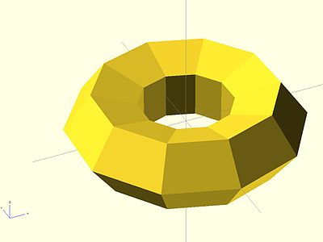
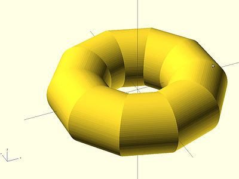

Extrusion is the process of creating an object with a fixed cross-sectional profile. OpenSCAD provides two commands to create 3D solids from a 2D shape: linear_extrude() and rotate_extrude(). Linear extrusion is similar to pushing Playdoh through a press with a die of a specific shape.
{kind=link}
Rotational extrusion is similar to the process of turning or "throwing" a bowl on the Potter's wheel.

Both extrusion methods work on a (possibly disjointed) 2D shape which exists on the X-Y plane. While transformations that operates on both 2D shapes and 3D solids can move a shape off the X-Y plane, when the extrusion is performed the end result is not very intuitive. What actually happens is that any information in the third coordinate (the Z coordinate) is ignored for any 2D shape, this process amounts to an implicit projection() performed on any 2D shape before the extrusion is executed. It is recommended to perform extrusion on shapes that remains strictly on the X-Y plane.
Linear Extrude
Linear Extrusion is a operation that takes a 2D object as input and generates a 3D object as a result.
In OpenSCAD Extrusion is always performed on the projection (shadow) of the 2d object xy plane and along the Z axis; so if you rotate or apply other transformations to the 2d object before extrusion, its shadow shape is what is extruded.
Although the extrusion is linear along the Z axis, a twist parameter is available that causes the object to be rotated around the Z axis as it is extruding upward. This can be used to rotate the object at it's center, as if it is a spiral pillar, or produce a helical extrusion around the Z axis, like a pig's tail.
A scale parameter is also included so that the object can be expanded or contracted over the extent of the extrusion, allowing extrusions to be flared inward or outward.
Usage
linear_extrude(height = 5, center = true, convexity = 10, twist = -fanrot, slices = 20, scale = 1.0, $fn = 16) {...}
You must use parameter names due to a backward compatibility issue.
height must be positive.
$fn is optional and specifies the resolution of the linear_extrude (higher number brings more "smoothness", but more computation time is needed).
If the extrusion fails for a non-trivial 2D shape, try setting the convexity parameter (the default is not 10, but 10 is a "good" value to try). See explanation further down.
Twist
Twist is the number of degrees of through which the shape is extruded. Setting the parameter twist = 360 extrudes through one revolution. The twist direction follows the left hand rule.
{kind=link}
0° of Twist
linear_extrude(height = 10, center = true, convexity = 10, twist = 0) translate([2, 0, 0]) circle(r = 1);
{kind=link}
-100° of Twist
linear_extrude(height = 10, center = true, convexity = 10, twist = -100) translate([2, 0, 0]) circle(r = 1);
{kind=link}
100° of Twist
linear_extrude(height = 10, center = true, convexity = 10, twist = 100) translate([2, 0, 0]) circle(r = 1);
{kind=link}
-500° of Twist
linear_extrude(height = 10, center = true, convexity = 10, twist = -500) translate([2, 0, 0]) circle(r = 1);
Center
It is similar to the parameter center of cylinders. If center is false the linear extrusion Z range is from 0 to height; if it is true, the range is from -height/2 to height/2.
center = true
linear_extrude(height = 10, center = true, convexity = 10, twist = -500) translate([2, 0, 0]) circle(r = 1);
{kind=link}
center = false
linear_extrude(height = 10, center = false, convexity = 10, twist = -500) translate([2, 0, 0]) circle(r = 1);
Mesh Refinement
The slices parameter defines the number of intermediate points along the Z axis of the extrusion. Its default increases with the value of twist. Explicitly setting slices may improve the output refinement.
{kind=link}
linear_extrude(height = 10, center = false, convexity = 10, twist = 360, slices = 100) translate([2, 0, 0]) circle(r = 1);
The special variables $fn, $fs and $fa can also be used to improve the output. If slices is not defined, its value is taken from the defined $fn value.
{kind=link}
linear_extrude(height = 10, center = false, convexity = 10, twist = 360, $fn = 100) translate([2, 0, 0]) circle(r = 1);
Scale
Scales the 2D shape by this value over the height of the extrusion. Scale can be a scalar or a vector:
linear_extrude(height = 10, center = true, convexity = 10, scale=3) translate([2, 0, 0]) circle(r = 1);
{kind=link}
linear_extrude(height = 10, center = true, convexity = 10, scale=[1,5], $fn=100) translate([2, 0, 0]) circle(r = 1);

Note that if scale is a vector, the resulting side walls may be nonplanar. Use twist=0 and the slices parameter to avoid asymmetry.
linear_extrude(height=10, scale=[1,0.1], slices=20, twist=0) polygon(points=[[0,0],[20,10],[20,-10]]);
Rotate Extrude
Rotational extrusion spins a 2D shape around the Z-axis to form a solid which has rotational symmetry. One way to think of this operation is to imagine a Potter's wheel placed on the X-Y plane with its axis of rotation pointing up towards +Z. Then place the to-be-made object on this virtual Potter's wheel (possibly extending down below the X-Y plane towards -Z). The to-be-made object is the cross-section of the object on the X-Y plane (keeping only the right half, X >= 0). That is the 2D shape that will be fed to rotate_extrude() as the child in order to generate this solid. Note that the object started on the X-Y plane but is tilted up (rotated +90 degrees about the X-axis) to extrude.
Since a 2D shape is rendered by OpenSCAD on the X-Y plane, an alternative way to think of this operation is as follows: spins a 2D shape around the Y-axis to form a solid. The resultant solid is placed so that its axis of rotation lies along the Z-axis.
Just like the linear_extrude, the extrusion is always performed on the projection of the 2D polygon to the XY plane. Transformations like rotate, translate, etc. applied to the 2D polygon before extrusion modify the projection of the 2D polygon to the XY plane and therefore also modify the appearance of the final 3D object.
- A translation in Z of the 2D polygon has no effect on the result (as also the projection is not affected).
- A translation in X increases the diameter of the final object.
- A translation in Y results in a shift of the final object in Z direction.
- A rotation about the X or Y axis distorts the cross section of the final object, as also the projection to the XY plane is distorted.
Don't get confused, as OpenSCAD renders 2D polygons with a certain height in the Z direction, so the 2D object (with its height) appears to have a bigger projection to the XY plane. But for the projection to the XY plane and also for the later extrusion only the base polygon without height is used.
It can not be used to produce a helix or screw threads.
The 2D shape must lie completely on either the right (recommended) or the left side of the Y-axis. More precisely speaking, every vertex of the shape must have either x >= 0 or x <= 0. If the shape spans the X axis a warning appears in the console windows and the rotate_extrude() is ignored. If the 2D shape touches the Y axis, i.e. at x=0, it must be a line that touches, not a point, as a point results in a zero thickness 3D object, which is invalid and results in a CGAL error. For OpenSCAD versions prior to 2016.xxxx, if the shape is in the negative axis the resulting faces are oriented inside-out, which may cause undesired effects.
Parameters
Usage
rotate_extrude(angle = 360, convexity = 2) {...}
{kind=link}
You must use parameter names due to a backward compatibility issue.
- convexity : If the extrusion fails for a non-trival 2D shape, try setting the convexity parameter (the default is not 10, but 10 is a "good" value to try). See explanation further down.
- angle [Note: Requires version 2019.05] : Defaults to 360. Specifies the number of degrees to sweep, starting at the positive X axis. The direction of the sweep follows the Right Hand Rule, hence a negative angle sweeps clockwise.
- $fa : minimum angle (in degrees) of each fragment.
- $fs : minimum circumferential length of each fragment.
- $fn : fixed number of fragments in 360 degrees. Values of 3 or more override $fa and $fs
- $fa, $fs and $fn must be named parameters. click here for more details,.
Examples
{kind=link}
→
{kind=link}
A simple torus can be constructed using a rotational extrude.
rotate_extrude(convexity = 10) translate([2, 0, 0]) circle(r = 1);
Mesh Refinement
{kind=link}
→
{kind=link}
Increasing the number of fragments composing the 2D shape improves the quality of the mesh, but takes longer to render.
rotate_extrude(convexity = 10) translate([2, 0, 0]) circle(r = 1, $fn = 100);
→
The number of fragments used by the extrusion can also be increased.
rotate_extrude(convexity = 10, $fn = 100) translate([2, 0, 0]) circle(r = 1, $fn = 100);
Using the parameter angle (with OpenSCAD versions 2016.xx), a hook can be modeled .
{kind=link}
translate([0,60,0])
rotate_extrude(angle=270, convexity=10)
translate([40, 0]) circle(10);
rotate_extrude(angle=90, convexity=10)
translate([20, 0]) circle(10);
translate([20,0,0])
rotate([90,0,0]) cylinder(r=10,h=80);
Extruding a Polygon
Extrusion can also be performed on polygons with points chosen by the user.
Here is a simple polygon and its 200 step rotational extrusion. (Note it has been rotated 90 degrees to show how the rotation appears; the rotate_extrude() needs it flat).
rotate([90,0,0]) polygon( points=[[0,0],[2,1],[1,2],[1,3],[3,4],[0,5]] );
rotate_extrude($fn=200) polygon( points=[[0,0],[2,1],[1,2],[1,3],[3,4],[0,5]] );

{kind=link}
{kind=link}
For more information on polygons, please see: 2D Primitives: Polygon.
Description of extrude parameters
Extrude parameters for all extrusion modes
| convexity | Integer. The convexity parameter specifies the maximum number of front sides (or back sides) a ray intersecting the object might penetrate.
This parameter is only needed for correctly displaying the object in OpenCSG preview mode and has no effect on the polyhedron rendering. |

This image shows a 2D shape with a convexity of 2, as the ray indicated in red crosses the 2D shape a maximum of 4 times (2 front sides and 2 back sides). The convexity of a 3D shape would be determined in a similar way. Setting it to 10 should work fine for most cases. Just setting high numbers in general may result in slower preview rendering.
Extrude parameters for linear extrusion only
| height | The extrusion height |
| center | If true, the solid is centered after extrusion |
| twist | The extrusion twist in degrees |
| slices | Similar to special variable $fn without being passed down to the child 2D shape. |
| scale | Scales the 2D shape by this value over the height of the extrusion. |